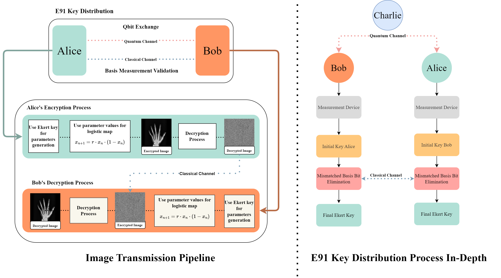
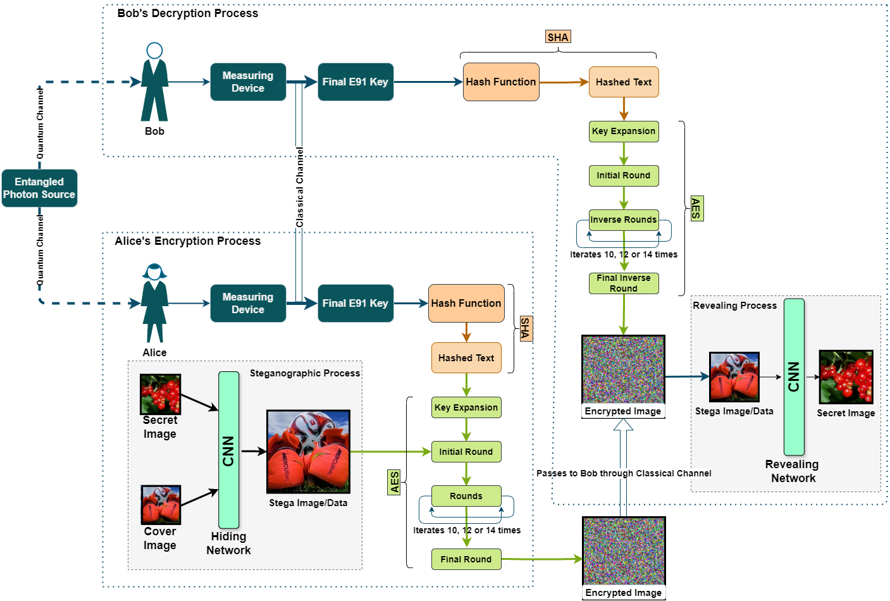
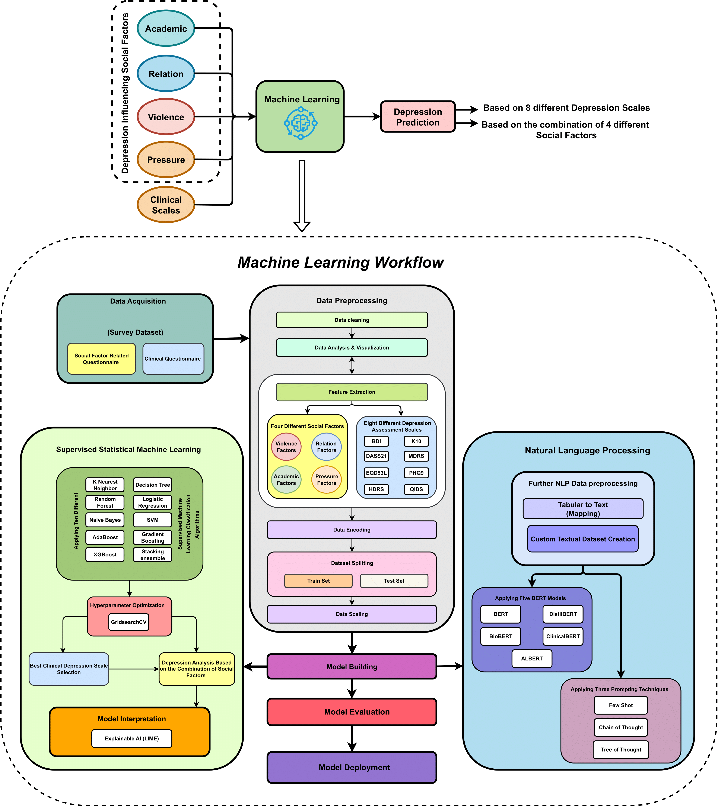
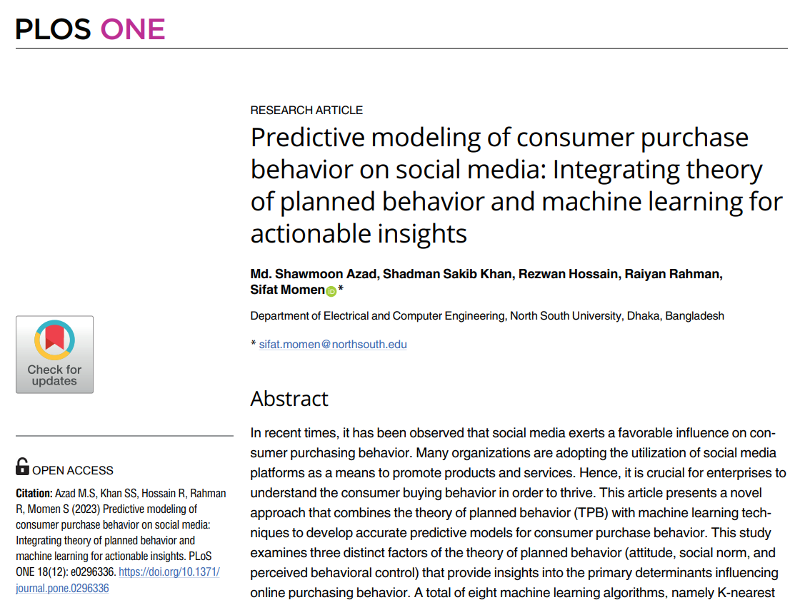

Publications
Peer-Reviewed Journal Articles and Conference Papers
Published Papers 5

Quantum Secure Image Transmission: A Chaos-Assisted QKD Approach Using Entanglement
IET Quantum Communication (Q2), 2025
This study proposes a secure image transmission framework that merges the E91 quantum key distribution protocol with logistic chaotic maps. By combining quantum entanglement for key exchange and chaos-based encryption for data protection, the system enhances resistance to quantum attacks.

Multi-layered Security: Integrating QKD with Classical Cryptography to Enhance Steganographic Security
Alexandria Engineering Journal (Q1), 2025
This study develops a secure image encryption system that combines Quantum Key Distribution (E91 protocol) with AES encryption, SHA hashing, and deep learning-based steganography for enhanced confidentiality and integrity.

QSAC: Quantum-assisted Secure Audio Communication using Entanglement, Audio Steganography, and Classical Encryption
Engineering Science & Technology (Q1), 2025
This research proposes a secure audio transmission framework that integrates Quantum Key Distribution (E91 protocol) with the ChaCha20-Poly1305 encryption–authentication scheme and steganography.

SAD: Self-Assessment of Depression for Bangladeshi University Students Using ML and NLP
ARRAY (Q1), 2024
This research analyzes depression among Bangladeshi university students by linking social factors with multiple machine learning, NLP, and explainable AI techniques. Support Vector Machines achieved 99.14% accuracy using the PHQ-9 scale.

Predictive Modeling of Consumer Purchase Behavior: TPB + Machine Learning for Actionable Insights
PLOS ONE (Q1), 2023
This study integrates the Theory of Planned Behavior with machine learning to predict online consumer purchasing behavior. Gradient boosting achieved the best accuracy (0.91) and F1 score (0.91).
Manuscripts Under Review 4

Explainable AI for Predicting Problematic Internet Use Among University Students
PLOS ONE — Under Review
XAI-driven modeling of PIU with SHAP/LIME attribution to identify behavioral and psychosocial drivers among Bangladeshi university students.
Enhancing Cloud Storage Security with QKD and Post-Quantum Cryptography Using Custom Proxy Re-Encryption
Quantum Information Processing — Under Review
Hybrid E91-QKD + Kyber-PKE architecture with proxy re-encryption to protect multi-tenant cloud storage against quantum and classical threats.
LSC-XAI: A Hybrid Explainable AI Framework for Predicting and Mitigating Healthcare Worker Attrition
Under Review
A hybrid explainable AI framework combining ensemble learning with SHAP-based interpretability to predict healthcare worker turnover and identify actionable intervention strategies.
Optimizing Power Flow Computations in the NREL-118 Bus System Using Hybrid Quantum-Classical Neural Networks
Under Review
Applying hybrid quantum-classical neural networks to optimize power flow computations in complex electrical grid systems, demonstrating quantum advantage for energy infrastructure problems.